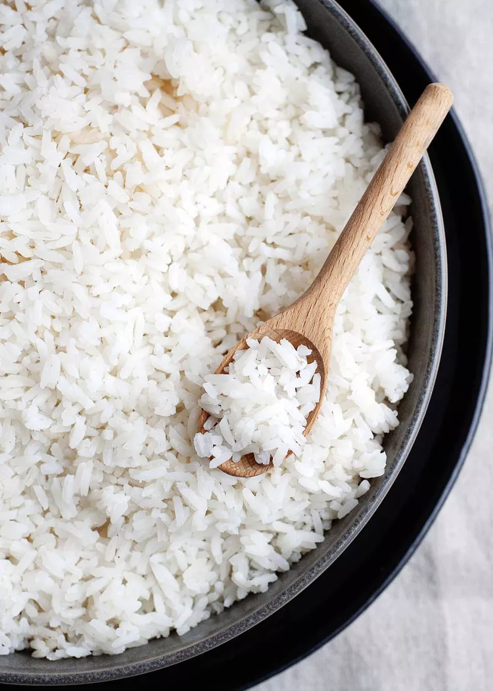

Arroz Branco
Fazer arroz branco é fácil! Evite que fique cru, empapado ou queimado com estas etapas simples para cozinhar com o chef.io. Fica pronto em menos de 30 minutos. No mundo da cozinha, existem dois tipos de aventureiros: os que já dominam a arte de ter sempre um arroz soltinho pronto... e os que ainda estão começando essa jornada.
Se você está aqui, apostamos que está pronto para subir de nível! E a gente está aqui para ajudar.
Nesta missão, você vai aprender tudo o que precisa para conquistar o arroz branco de grão longo, esse clássico da despensa que é fácil de preparar e difícil de errar (depois que você aprende, claro). Sério, tudo o que você precisa saber tá aqui, como um kit de preparo onde você só entra com o arroz e a água.
Pronto? Vamos fazer arroz juntos!
Cozinhando arroz no fogão
- PREPARO
2 mins - COZIMENTO
10 mins - DESCANSO
10 mins - TOTAL
22 mins
RENDIMENTO: 4 porções
NOTA: É seguro dobrar essa receita usando a mesma panela.
Ingredientes
- 1 xícara de arroz branco de grão longo
- 2 xícaras de água
- 1 dente de alho picado ou amassado, opcional
- 1/4 colher de chá de sal, opcional
Modo de preparo
-
Lave o arroz:
Coloque o arroz em uma peneira e enxágue com água corrente por cerca de 30 segundos, até que a água saia limpa. -
Refogue o alho (opcional, mas recomendado):
Em uma panela média (cerca de 2 litros), adicione um fio de óleo ou azeite e refogue o alho picado até dourar levemente. Isso realça o aroma e dá um toque delicioso ao arroz. -
Junte o arroz e a água:
Adicione o arroz lavado à panela com o alho e misture por alguns segundos. Em seguida, adicione a água e o sal (se for usar). -
Tampe e deixe ferver:
Coloque a tampa na panela e leve ao fogo médio-alto até começar a ferver. Fique de olho! Assim que notar o vapor escapando ou ouvir o barulho da tampa, é hora de agir. -
Abaixe o fogo e cronometre:
Quando ferver, abaixe o fogo para o mínimo possível — o suficiente para manter uma fervura bem suave. Programe 10 minutos no relógio. Pode dar uma espiadinha rápida durante o cozimento, mas evite abrir muito a tampa. -
Desligue e deixe descansar:
Desligue o fogo, mas não tire a tampa ainda. Deixe o arroz descansar por mais 10 minutos. Esse tempo de vapor final é essencial para deixá-lo macio e soltinho — igualzinho ao de restaurante! -
Solte e sirva:
Use um garfo ou colher para soltar os grãos com cuidado. Pronto! Seu arroz está no ponto para ser servido.
:max_bytes(150000):strip_icc():format(webp)/__opt__aboutcom__coeus__resources__content_migration__simply_recipes__uploads__2020__02__HTC-White-Rice-Method-1-e10dcbdffa0845a699d227e950dad4a6.jpg)
:max_bytes(150000):strip_icc():format(webp)/__opt__aboutcom__coeus__resources__content_migration__simply_recipes__uploads__2020__02__HTC-White-Rice-Method-3-39b221592c9942e091d75008b49d121d.jpg)
:max_bytes(150000):strip_icc():format(webp)/__opt__aboutcom__coeus__resources__content_migration__simply_recipes__uploads__2020__02__HTC-White-Rice-Method-4-a29b19fdf5414426874a867203c35cc7.jpg)
:max_bytes(150000):strip_icc():format(webp)/__opt__aboutcom__coeus__resources__content_migration__simply_recipes__uploads__2020__02__HTC-White-Rice-Method-8-f92e5df7ac9b406c9e05c169eac95737.jpg)
Entendendo o arroz branco
Fazer arroz pode parecer simples, mas envolve reações químicas e técnicas que fazem toda a diferença no resultado final. Quando você domina isso, não está apenas cozinhando — está entendendo o que acontece na panela.
Por que lavar o arroz?
Lavar o arroz remove o excesso de amido que, ao ser cozido, pode deixar os grãos grudados e empapados. Ao enxaguar até a água sair limpa, você garante um arroz mais soltinho.
Água na medida certa:
A proporção ideal é de 2 partes de água para 1 de arroz. Isso é suficiente para hidratar os grãos sem deixar excesso de líquido, criando o equilíbrio perfeito entre maciez e firmeza.
Tampa fechada = vapor concentrado:
Cozinhar com a panela tampada mantém o vapor dentro, permitindo que o arroz cozinhe de maneira uniforme e sem ressecar. Essa técnica é especialmente importante para o tempo de descanso no final.
O descanso final:
Mesmo com o fogo desligado, o arroz continua cozinhando no vapor interno. Os 10 minutos de descanso são cruciais para que os grãos terminem de absorver a umidade e fiquem no ponto certo.
Refogar ou não refogar?
Refogar o alho (ou cebola) antes de adicionar o arroz é um truque que traz aroma e sabor extra. Não é obrigatório, mas faz toda a diferença na experiência.
Informações Nutricionais (por porção)
As informações nutricionais são calculadas com base em um banco de dados de ingredientes e devem ser consideradas uma estimativa.
Você concluiu a receita!
Seguindo esta receita, você desenvolveu habilidades essenciais que são a base para qualquer arroz! Agora você entende os princípios que tornam o arroz branco um clássico da cozinha brasileira.
Nessa lição você aprendeu:
- A proporção ideal entre arroz e água
- A importância do descanso com a panela tampada
- Como refogar para dar mais sabor
- Técnicas para deixar o arroz soltinho
Continue praticando para se tornar um verdadeiro mestre na cozinha!
 Conquista desbloqueada:
Conquista desbloqueada: Mestre do Arroz!